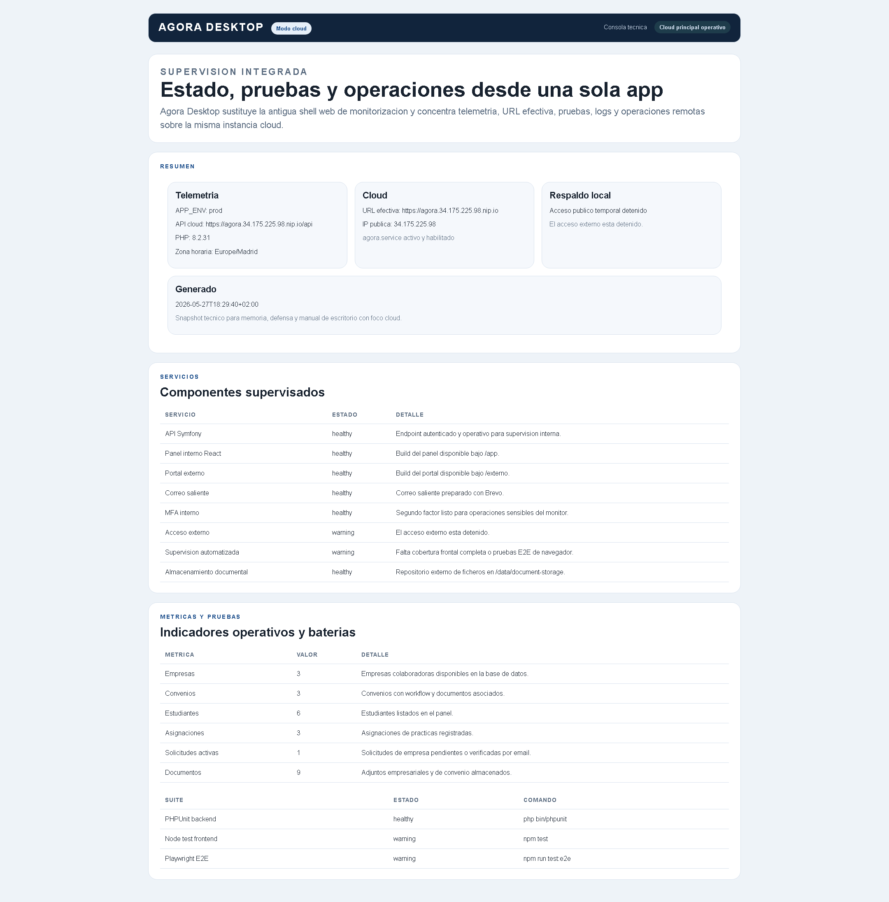

--- title: Gestion de Empresas Colaboradoras para FP Dual author: Luis Angel tutor: Elena reviewDate: 11/05/2026 repository: https://github.com/lmendez861/TFG-Agora ---
Agradecimientos
Quiero agradecer a mi tutora Elena el seguimiento continuo del trabajo, la revision critica de la memoria y la orientacion academica y tecnica durante todo el desarrollo. Tambien agradezco al centro educativo el contexto real aportado para orientar el proyecto hacia una necesidad concreta y utilizable. Por ultimo, agradezco a mi entorno personal el apoyo prestado durante las fases de analisis, implementacion, pruebas y cierre documental.
Resumen
Resumen (ES)
Este proyecto desarrolla una plataforma para gestionar empresas colaboradoras, convenios, estudiantes, tutores, seguimientos y solicitudes externas en un entorno de FP Dual. La solucion se compone de una API en Symfony, un portal interno en React y TypeScript, un portal externo orientado a empresas interesadas en colaborar con el centro, una guia documental separada y Agora Desktop como consola tecnica para operacion local o cloud. La aplicacion cubre el ciclo operativo completo: preregistro de cuentas de empresa, envio de solicitudes corporativas, verificacion por correo, revision interna, continuidad de acceso antes y despues de la aprobacion, gestion de convenios, asignacion de estudiantes, seguimiento con evidencias, evaluacion final, control documental versionado, exportacion CSV y supervision tecnica con pruebas, logs y backups desde escritorio. La entrega final prioriza mantenibilidad, separacion clara de responsabilidades, despliegue integrado y publicacion reproducible tanto en local como en una VM publica, y una base funcional suficientemente solida para su defensa academica.
Palabras clave: FP Dual, empresas colaboradoras, convenios, seguimiento, Symfony, React, gestion academica.
Summary (EN)
This project delivers a platform to manage partner companies, agreements, students, mentors, follow-up records, and external registration requests for dual training. The solution combines a Symfony API, an internal React and TypeScript portal, an external company portal, a separated documentation guide, and a desktop technical console for local or cloud operations. The platform covers the full operational workflow: company registration, email verification, internal review, persistent company account activation, agreement management, student assignment, follow-up evidence, final evaluation, versioned document control, CSV export, and technical supervision with testing, logs, and backups from the desktop client. The final delivery prioritizes maintainability, clear separation of responsibilities, an integrated single-URL deployment, and a functional baseline suitable for academic defense.
Keywords: dual training, partner companies, agreements, follow-up, Symfony, React, academic management.
Introduccion y contexto
La gestion de empresas colaboradoras y practicas formativas suele apoyarse en hojas de calculo, correos electronicos y documentos repartidos entre distintas carpetas. Ese enfoque genera duplicidades, dificulta la trazabilidad y complica la supervision del estado real de cada solicitud, convenio o asignacion. El proyecto parte de esa necesidad y reorganiza el antiguo contexto tecnico de Agora para resolver un problema concreto del centro educativo: controlar el alta de empresas, formalizar convenios y gestionar practicas desde una unica plataforma coherente.
El resultado ya no se plantea como un prototipo aislado. La aplicacion separa claramente el acceso interno, el acceso externo, la documentacion y la operacion tecnica de escritorio, y refuerza su base con autenticacion, control documental, seguimiento operativo, automatizacion de pruebas y verificacion tecnica. Esta aproximacion permite explicar el sistema de forma comprensible durante la defensa y, al mismo tiempo, dejar una estructura realista para evolucion posterior.
Objetivos y alcance
Objetivo general
Disenar e implantar una aplicacion web que centralice la gestion de empresas colaboradoras y practicas formativas, unificando informacion operativa, control documental, comunicacion y seguimiento de estados en una unica plataforma.
Objetivos especificos
- Digitalizar el ciclo de vida de empresa, convenio, estudiante, tutor y asignacion.
- Habilitar un flujo publico de solicitud de empresa con verificacion por correo y revision interna.
- Proporcionar un panel interno con dashboard, CRUD operativo, bandeja unificada e indicadores de estado.
- Incorporar un portal de empresa con cuenta persistente previa a la solicitud, acceso continuo, verificacion y recuperacion de contrasena.
- Gestionar seguimientos, evidencias y evaluacion final dentro de la ficha de asignacion.
- Implantar control documental con versionado, retirada controlada y restauracion.
- Permitir la exportacion CSV de la informacion operativa relevante.
- Mantener una arquitectura separada y mantenible entre API, portal interno, portal externo, documentacion y app de escritorio operativa.
Alcance
Dentro del alcance actual se incluyen el portal interno, el portal externo, la API REST, la persistencia relacional, la autenticacion interna, el preregistro externo de cuentas de empresa, la verificacion por correo, la aprobacion interna, la mensajeria empresa-centro, la bandeja unificada, el seguimiento con evidencias, la evaluacion final, el control documental versionado, la exportacion CSV, una app de escritorio para operacion tecnica en local o en cloud, y un despliegue funcional en Google Cloud Compute Engine con Docker Compose, PostgreSQL, proxy HTTPS y correo transaccional operativo. El flujo local con MFA para acceso publico temporal sigue existiendo dentro de Agora Desktop, pero ya no hay una pagina web de monitorizacion separada en el recorrido funcional. Quedan fuera de alcance, en esta entrega, la firma electronica avanzada, las integraciones corporativas con ERP o directorios institucionales, el almacenamiento documental en nube gestionada, un cliente de escritorio completo para toda la operativa funcional del negocio y una instrumentacion avanzada de produccion con alta disponibilidad.
Analisis de requisitos
Problema a resolver
El centro necesita una herramienta que reduzca la fragmentacion de informacion, acelere la validacion de nuevas empresas y permita consultar en tiempo real el estado de convenios, estudiantes, asignaciones, seguimientos, documentos y solicitudes externas. El problema no es solo almacenar datos, sino garantizar continuidad operativa, trazabilidad, control de cambios y capacidad de supervision.
Actores principales
- Administracion y coordinacion interna.
- Tutores academicos.
- Tutores profesionales.
- Estudiantes vinculados a practicas.
- Empresas interesadas en colaborar con el centro.
- Empresas con cuenta persistente en el portal externo antes y despues de la aprobacion.
Requisitos funcionales
- Consultar indicadores y modulos de gestion desde el panel interno.
- Crear, editar y revisar empresas, convenios, estudiantes y asignaciones.
- Registrar solicitudes externas de empresa y aprobarlas o rechazarlas desde el panel interno.
- Verificar el correo de contacto de la empresa y mantener una cuenta persistente desde el preregistro hasta la operativa posterior.
- Consultar y responder mensajes desde una bandeja unificada de conversaciones.
- Registrar seguimientos, adjuntar evidencias, cerrar hitos y emitir una evaluacion final.
- Gestionar documentos con versionado, retirada controlada y restauracion.
- Exportar informacion en CSV desde dashboard y modulos principales.
- Supervisar estado tecnico, logs, documentos y acceso publico temporal desde Agora Desktop.
Requisitos no funcionales
- Interfaz responsive y diferenciada por contexto de uso.
- Seguridad basada en autenticacion, roles y segundo factor para operaciones sensibles.
- Arquitectura mantenible, con separacion clara entre backend y frontends.
- Persistencia portable en desarrollo y despliegue reproducible.
- Rendimiento suficiente para navegacion fluida y carga razonable en entorno local.
Diseno de la solucion
Arquitectura general
La solucion se estructura en cinco bloques principales. El primero es una API REST construida con Symfony, responsable de seguridad, logica de negocio, persistencia, auditoria y exposicion de endpoints. El segundo es un portal interno desarrollado con React, TypeScript y Vite, orientado a coordinacion academica y gestion operativa. El tercero es un portal externo, tambien basado en React y TypeScript, que cubre tanto el preregistro inicial como el area posterior de empresa aprobada. El cuarto es una guia documental publica separada del uso operativo. El quinto es Agora Desktop, una app Electron para operacion tecnica local o remota, automatizacion de pruebas, diagnostico, logs, reinicios y empaquetado Windows.
El backend publica rutas protegidas bajo /api, rutas publicas acotadas para preregistro y verificacion externa, rutas de autenticacion para cuentas de empresa y una shell integrada para servir los dos frontends. En la entrega integrada, el panel interno se sirve bajo /app, la documentacion bajo /documentacion y el portal externo bajo /externo. La app de escritorio trabaja sobre la misma raiz publica, consume /api/monitor y complementa esa telemetria con operaciones remotas por SSH sobre la VM. No replica la logica funcional del portal interno: se limita deliberadamente a la supervision tecnica, la ejecucion de pruebas, la lectura de logs, la deteccion de la URL cloud efectiva y ciertas operaciones de infraestructura local o remota, como el control de agora.service.

Arquitectura tecnologica
Si se expresa la solucion en capas tecnologicas, la arquitectura puede resumirse asi:
- Capa de presentacion interna: SPA en React y TypeScript servida bajo
/app, destinada a coordinacion y gestion academica. - Capa de presentacion externa: SPA independiente en React y TypeScript servida bajo
/externo, destinada a empresas colaboradoras antes y despues de su aprobacion. - Capa de negocio: backend Symfony 7 que centraliza autenticacion, roles, validacion, reglas de negocio, auditoria, MFA y exposicion de API REST.
- Capa de persistencia: Doctrine ORM sobre SQLite en desarrollo y sobre un motor de servidor como PostgreSQL o MariaDB en despliegue permanente.
- Capa documental y operativa: documentacion publica y app de escritorio para soporte tecnico, pruebas y empaquetado.
- Capa de infraestructura: VM publica en Google Cloud Compute Engine o entorno local empaquetado, contenedores Docker, proxy HTTPS, almacenamiento persistente para documentos, servicio de correo transaccional y resolucion publica por DNS wildcard.
Esta explicacion es especialmente util para la defensa, porque permite exponer la aplicacion mediante esquemas y responsabilidades en lugar de entrar en codigo fuente. Tambien deja claro que el sistema ya no depende conceptualmente de una unica maquina local, sino de componentes desacoplados que pueden redistribuirse en un servidor o cloud. La Figura 1 resume precisamente esa topologia final: dos clientes web, una consola tecnica, un borde HTTPS y un backend contenedorizado sobre infraestructura persistente.
Esquema detallado de arquitectura
En la defensa resulta mas claro bajar un nivel adicional y expresar la arquitectura como un recorrido tecnico de extremo a extremo. El esquema visual de la Figura 1 se complementa con este recorrido textual para justificar que la misma raiz publica sirve los dos portales y la documentacion, mientras la consola de escritorio opera por API y SSH:
Navegador empresa
-> SPA React externa (/externo)
-> /portal-auth/register, /portal-auth/login, /portal-auth/me
-> /api/portal-company/request, /api/portal-company/overview, /api/portal-company/messages
-> /portal/solicitudes/{token} y /registro-empresa/confirmar para enlaces publicos y verificacion
Navegador centro
-> SPA React interna (/app)
-> /api/login, /api/me, /api/bootstrap
-> /api/empresa-solicitudes, /api/empresa-solicitudes/{id}/aprobar, /api/empresa-solicitudes/{id}/rechazar
-> /api/empresa-solicitudes/bandeja y /api/empresa-solicitudes/{id}/mensajes
-> /api/empresas, /api/convenios, /api/estudiantes, /api/asignaciones
Ambos recorridos
-> Apache/PHP en contenedor Docker
-> Symfony 7 (controladores + servicios + seguridad + auditoria + MFA)
-> Doctrine ORM
-> PostgreSQL 16 en VM publica
-> Mailer Symfony
-> Brevo para verificacion, rechazos, reseteo y MFA
-> almacenamiento documental
-> volumen persistente montado en la VM
Servicios auxiliares
-> /documentacion como shell publica separada
-> /api/monitor como telemetria interna consumida por Agora Desktop
-> Agora Desktop como capa local de soporte, pruebas, logs, lectura de URL cloud y operaciones SSHEste esquema deja claro un punto importante para la defensa: el portal externo no es una pagina estatica conectada de forma superficial a la API, sino un cliente autenticado con su propio firewall, su propio proveedor de usuarios y un flujo separado del panel interno, aunque ambos compartan el mismo nucleo de negocio.
Si se quiere explicar tambien el despliegue remoto con mas precision, conviene proyectar el siguiente esquema de nodos:
Internet
-> DNS wildcard nip.io / dominio publico efectivo
-> VM publica Google Cloud Compute Engine
-> reglas firewall 80/443 + SSH administrado
-> servicio systemd agora.service para arranque automatico
-> Docker network "agora"
-> contenedor app
-> Apache 2.4
-> PHP 8.2
-> Symfony 7
-> build integrada de /app y /externo
-> directorios var/cache, var/log y almacenamiento documental
-> contenedor db
-> PostgreSQL 16
-> volumen persistente PostgreSQL
-> volumen persistente documentos
-> salida SMTP/API
-> BrevoEste segundo nivel ayuda a defender que la solucion ya no depende del portatil de desarrollo. La URL publica termina en una VM aislada, el backend y la base de datos quedan encapsulados en contenedores, los documentos persisten fuera del ciclo de vida del contenedor y el correo transaccional sale por un proveedor externo dedicado.
Justificacion tecnica de la separacion
El portal interno y el portal externo se desarrollan como SPA independientes. Esta separacion permite evolucionar cada interfaz segun su contexto sin mezclar dependencias, ciclos de despliegue ni decisiones de UX. El backend se mantiene como pieza central de negocio y seguridad, mientras que la documentacion se sirve como shell diferenciada y la supervision tecnica se desplaza a Agora Desktop para no contaminar el flujo funcional del producto.
No se trata de dos programas distintos que resuelvan el mismo problema, sino de dos accesos diferenciados a una misma plataforma. El portal interno responde a necesidades de coordinacion, validacion y administracion del centro, mientras que el portal externo responde a la experiencia de empresa antes y despues de su aprobacion. Mantener ambos recorridos en aplicaciones separadas reduce complejidad visual, evita exponer logica interna al usuario externo y permite aplicar reglas de seguridad, navegacion y despliegue diferentes sin duplicar la logica de negocio, que sigue concentrada en la API Symfony.
Esta decision tambien mejora la defensa tecnica del proyecto. Permite explicar con claridad que existe un unico nucleo de datos y procesos, pero varias interfaces especializadas segun el actor que entra al sistema. De este modo, la plataforma resulta mas coherente que una unica SPA con permisos cruzados, menus condicionales y estados de acceso heterogeneos.
Modelo de datos
El dominio se organiza en torno a entidades nucleares como EmpresaColaboradora, Convenio, Estudiante, TutorAcademico, TutorProfesional y AsignacionPractica. Sobre ese nucleo se apoyan entidades de soporte como EmpresaSolicitud, EmpresaMensaje, EmpresaPortalCuenta, EmpresaDocumento, ConvenioDocumento, Seguimiento, EvaluacionFinal, ConvenioChecklistItem y ConvenioAlerta. Esta estructura permite cubrir tanto la operacion principal como la trazabilidad, la evidencia documental y la evolucion hacia un area persistente de empresa.

Relacion detallada entre cuenta, solicitud y mensajeria
La parte que mas conviene explicar con detalle en la memoria y en la defensa es la relacion entre la cuenta de empresa, la solicitud y el canal de mensajes, porque ese eje es el que da continuidad al flujo externo. La Figura 2 ya no se limita al esquema academico basico: incorpora tambien EmpresaPortalCuenta, EmpresaSolicitud, EmpresaMensaje, EmpresaDocumento, ContactoEmpresa y los satelites de Convenio para reflejar la operativa real del despliegue final.
empresa_portal_cuenta
PK id
email + password_hash + activated_at + last_login_at
0..1 empresa_colaboradora asociada tras aprobacion
0..1 empresa_solicitud asociada mientras existe el proceso de alta
empresa_solicitud
PK id
token + portal_token + estado + email_verificado_en + aprobado_en
datos corporativos y datos de contacto
1 cuenta portal asociada
0..n empresa_mensaje
empresa_mensaje
PK id
autor + texto + created_at
1 solicitud
autor = empresa | centro
orden cronologico compartido para ambos lados
empresa_colaboradora
PK id
1 empresa aprobada en el dominio interno
1 cuenta portal asociada si el acceso externo sigue activo
0..n convenio
0..n empresa_documento
0..n asignacion_practicaDicho de otra forma, el sistema ya no fuerza un salto brusco entre una “solicitud anonima” y una “cuenta creada despues”. Primero existe la EmpresaPortalCuenta, luego la EmpresaSolicitud queda ligada a esa cuenta, y finalmente, cuando el centro aprueba, aparece la EmpresaColaboradora asociada al mismo acceso. Ese encadenamiento reduce friccion, conserva el historial de mensajes y evita pedir una contrasena tardia solo para poder continuar el proceso.
La relacion de mensajeria merece un matiz adicional. El chat no cuelga de EmpresaColaboradora, sino de EmpresaSolicitud. Esa decision permite que el canal exista desde la primera revision, siga operativo mientras la empresa esta pendiente o verificada y permanezca visible cuando el centro aprueba y ya existe la ficha interna. En la practica, la empresa escribe siempre con la misma cuenta; lo unico que cambia es el contexto de negocio que el panel muestra alrededor del canal.
Seguridad y control de acceso
La seguridad del entorno interno se apoya en autenticacion Symfony, jerarquia de roles y una combinacion de json_login y sesion de navegador. El sistema diferencia perfiles de administracion, coordinacion, documentacion, monitorizacion y auditoria. En el despliegue cloud, la exposicion publica se sirve tras un proxy HTTPS con certificados de Let's Encrypt, encabezados de seguridad, cookies seguras y limitacion de peticiones. Las operaciones sensibles del flujo local de acceso publico temporal siguen requiriendo MFA por correo. Ademas, las acciones relevantes se registran mediante auditoria interna.
El portal externo dispone de un flujo independiente con su propio firewall y su propio proveedor EmpresaPortalCuenta. La cuenta de empresa se crea antes de enviar la solicitud, el login externo queda separado del panel interno y la verificacion por correo se aplica sobre la solicitud corporativa. Esta separacion evita mezclar credenciales, conserva contexto de mensajes y mantiene un unico acceso empresarial antes y despues de la aprobacion.
Flujo de trabajo operativo
La plataforma no se ha planteado como una suma de CRUD aislados, sino como un flujo de negocio secuencial. El recorrido recomendado comienza en el portal externo con un preregistro de cuenta de empresa. A partir de ese acceso, la empresa completa la solicitud corporativa, valida su correo y espera revision interna. Ese paso no crea automaticamente una operativa academica completa, sino una entrada controlada para que el centro revise la informacion antes de activar la relacion.
Una vez dentro del portal interno, el primer paso correcto es revisar la solicitud o crear manualmente una empresa ya contrastada. Solo cuando la empresa queda en estado activo tiene sentido registrar un convenio. El convenio sigue su propio ciclo de maduracion, desde borrador hasta firmado o vigente. Sobre esa base ya validada se registran estudiantes y tutores, y solo entonces se planifica la asignacion.
Este orden no es solo recomendable desde el punto de vista funcional, sino que tambien se ha reforzado a nivel de aplicacion. En la revision final se ha ajustado el flujo para que la cuenta de empresa exista antes de la solicitud, los convenios se creen solo sobre empresas activas y las asignaciones solo puedan registrarse sobre empresas activas y convenios firmados, vigentes o en renovacion. De este modo se evita introducir practicas sobre datos todavia pendientes de validar y se mantiene una coherencia real entre cuenta, solicitud, empresa, convenio y asignacion.
Esquema detallado del flujo de trabajo
1. Preregistro de cuenta externa
Empresa -> /portal-auth/register -> empresa_portal_cuenta
2. Acceso al panel privado de empresa
Empresa -> /portal-auth/login -> sesion de navegador externa
3. Registro de la solicitud corporativa
Empresa -> /api/portal-company/request -> empresa_solicitud asociada a empresa_portal_cuenta
4. Verificacion del correo de la solicitud
Empresa -> enlace /registro-empresa/confirmar?token=...
Resultado -> empresa_solicitud.estado = email_verificado
5. Revision interna
Centro -> /app -> /api/empresa-solicitudes, bandeja y mensajes
6. Aprobacion
Centro -> /api/empresa-solicitudes/{id}/aprobar
Resultado ->
- se crea empresa_colaboradora
- se crea contacto_empresa inicial
- empresa_portal_cuenta se asocia a empresa_colaboradora
- la cuenta conserva el mismo acceso
7. Operativa posterior
Empresa -> /api/portal-company/overview, /messages, /documents
Centro -> convenios, asignaciones, seguimientos, evaluacion y bandejaEste esquema es el que conviene proyectar durante la defensa cuando se explique que la mensajeria no es un modulo aislado. El chat nace en la solicitud, pero sobrevive al alta de empresa porque la cuenta externa y la solicitud quedan enlazadas desde el principio.
Si se necesita una version todavia mas operativa para exponer el flujo diario, puede resumirse asi:
Estado 1: cuenta creada, sin solicitud
- la empresa puede iniciar sesion
- el panel privado muestra formulario de alta
Estado 2: solicitud enviada, correo pendiente
- la empresa ve el estado de la solicitud
- el sistema envia verificacion por Brevo
Estado 3: correo verificado, pendiente de revision
- la empresa ya puede usar el canal de mensajes
- el centro revisa desde /api/empresa-solicitudes y su bandeja
Estado 4: aprobada
- se crea empresa_colaboradora
- la misma cuenta externa pasa a ver convenios, asignaciones y documentos
- los mensajes anteriores siguen visibles
Estado 5: rechazada
- la cuenta sigue existiendo
- el portal muestra motivo de rechazo y trazabilidad del intercambio previoCon esta lectura por estados se entiende mejor por que el refresco automatico de mensajes se resuelve en el portal externo con polling corto sobre overview: no se trata de un chat independiente, sino de una vista continua del mismo expediente empresarial a lo largo de todo su ciclo.
Diseno de interfaz
El portal interno se estructura por modulos: dashboard, empresas, convenios, estudiantes, asignaciones, tutores, solicitudes, bandeja unificada y perfil. La interfaz combina tablas, tarjetas, paneles de detalle, formularios modales, workflows, documentos versionados y exportaciones CSV. El portal externo se organiza en un recorrido coherente entre inicio, registro, correo, estado, acceso empresa, recursos y panel privado. La documentacion y la app de escritorio se mantienen separadas del flujo principal para distinguir claramente uso funcional, supervision tecnica y operacion local.
Dentro del portal interno, los KPI del dashboard no se usan como un recurso estetico, sino como un mecanismo de supervision rapida. Su objetivo es ofrecer al personal del centro una lectura inmediata del estado operativo: volumen de empresas, convenios, estudiantes, asignaciones y actividad pendiente. Esta capa resumida reduce navegacion innecesaria, ayuda a detectar incidencias o cuellos de botella y sirve como punto de entrada a los modulos con mayor carga de gestion. En otras palabras, el dashboard no sustituye a los listados detallados, pero si actua como cuadro de mando para priorizar acciones.



Implementacion
Backend Symfony
El backend concentra controladores REST para empresas, convenios, estudiantes, asignaciones, tutores, solicitudes, mensajes, portal de empresa, MFA, acceso publico y monitorizacion. La persistencia se resuelve con Doctrine ORM y SQLite en desarrollo, con configuracion adaptable a otros motores. La logica documental se ha centralizado para validar tipos de archivo, almacenar binarios, versionar documentos activos y permitir restauraciones controladas. En la revision final se ha reforzado el almacenamiento de documentos privados de empresa para que los nuevos binarios queden ligados a la propia entidad y embebidos en base de datos.
Portal interno
El portal interno funciona como shell de gestion academica y administrativa. Desde ahi se consultan KPI, se gestionan entidades principales, se revisan solicitudes, se accede a fichas 360 de empresas y convenios, se trabaja con seguimientos y se lanzan exportaciones CSV. El panel incorpora una pagina de acceso profesional y una bandeja unificada de mensajeria para conversaciones empresa-centro. En la version final, la sincronizacion del portal funcional es automatica y silenciosa: se refresca de forma periodica y tambien cuando el navegador recupera el foco, sin mostrar la URL tecnica de la API ni un boton manual de sincronizacion durante la demo. Para reforzar la coherencia del proceso, la campana superior concentra tanto las solicitudes pendientes como el acceso a la bandeja, mientras que los formularios filtran y validan las entidades operativas antes de permitir convenios o asignaciones. Ademas, los detalles de convenios, asignaciones, pipeline visual, bandeja y exportaciones CSV se han estabilizado en la revision final tras una pasada de regresion funcional.
Portal externo
El portal externo ofrece ahora dos momentos de uso enlazados por la misma cuenta. En el primero, una empresa interesada crea un acceso previo con correo y contrasena, entra en su panel privado y desde ahi registra la solicitud corporativa. Despues revisa el correo de verificacion y consulta el estado de la propuesta sin perder el mismo acceso. En el segundo, tras la aprobacion del centro, esa misma cuenta queda asociada a la empresa aprobada y pasa a servir para revisar convenios y asignaciones, descargar documentos y mantener la conversacion con el centro desde un panel privado ya operativo. En la revision final se ha reforzado ademas el comportamiento de mensajeria para que tanto la bandeja interna como el chat del portal externo se refresquen de forma automatica en segundo plano y al recuperar el foco del navegador, mejorando la percepcion de continuidad operativa durante la demostracion.
Seguimientos y evaluacion final
La ficha de asignacion incorpora ya un modulo real de seguimiento. Desde el panel interno se pueden crear hitos, editar registros, adjuntar evidencias, cerrar seguimientos y reabrirlos si es necesario. Sobre esa misma base se apoya la evaluacion final, que centraliza valoraciones, conclusiones y notas principales del cierre de practicas.
Control documental y exportacion CSV
El sistema soporta subida de documentos PDF, Word y Excel en empresas, convenios y seguimientos. Cada documento puede registrarse con tipo controlado, descargarse posteriormente y, cuando se sube una nueva version activa, el resto de versiones previas se desactivan para preservar trazabilidad. En paralelo, la exportacion CSV se mantiene como funcionalidad transversal: el dashboard genera un resumen CSV y los modulos principales descargan listados operativos desde endpoints dedicados del backend.
Despliegue y operacion
Requisitos del entorno
Para ejecutar el proyecto en local desde el repositorio son necesarios PHP, Composer, Node.js, npm y los ficheros .env.local correspondientes. El backend utiliza SQLite en desarrollo, por lo que no requiere un servidor de base de datos separado para la demostracion basica. Los frontends pueden ejecutarse en modo desarrollo con Vite o integrarse en la build final servida por Symfony. Como alternativa, la entrega incorpora ya una app de escritorio empaquetable para Windows que incluye una copia portable de PHP y evita exigir esas dependencias al equipo destino.
Configuracion
La configuracion se apoya en variables de entorno para base de datos, correo saliente, credenciales del panel, destino MFA, URL base y opciones de desarrollo. Esta aproximacion evita credenciales embebidas y permite reproducir el entorno con mayor control. En la entrega final se ha dejado preparado Brevo como proveedor de correo transaccional para verificacion de empresas, recuperacion de cuentas de empresa, MFA interno y avisos de rechazo de solicitudes externas.
En la practica, la autenticacion interna combina configuracion de frontend y backend. El frontend interno lee desde import.meta.env las variables VITE_API_BASE_URL, VITE_API_USERNAME y VITE_API_PASSWORD, que determinan contra que API se conecta y con que credenciales iniciales realiza el acceso. A partir de ahi, el backend Symfony resuelve la autenticacion real mediante json_login, genera la sesion del navegador y aplica los permisos correspondientes sobre las rutas protegidas. De forma paralela, el backend utiliza su propio .env.local para base de datos, correo saliente, remitente, MFA y resto de configuracion operativa. Esta separacion permite cambiar credenciales o infraestructura sin modificar el codigo fuente.
Publicacion integrada
La entrega se mantiene integrada bajo una unica raiz: /app para el portal interno, /externo para el portal externo y /documentacion para la guia funcional. En la revision final esa integracion ya no se limita al equipo local: se ha publicado en una VM Ubuntu de Google Cloud Compute Engine con Docker Compose, PostgreSQL, volumen persistente para documentos y un proxy HTTPS delante de la aplicacion. De este modo los dos portales quedan accesibles desde el exterior sin depender del portatil del alumno. En paralelo, Agora Desktop sigue existiendo como alternativa local autocontenida para diagnostico, empaquetado y demostracion offline, y como consola tecnica remota para la VM.
Durante la revision final se ha corregido ademas un aspecto importante de acceso externo: los enlaces de verificacion y recuperacion ya no quedan ligados a 127.0.0.1 ni a una IP local cuando el flujo se prueba desde fuera. Si se define APP_EXTERNAL_BASE_URL, el backend genera esas URLs con el origen publico correcto. En el despliegue actual se ha usado un hostname gratuito basado en nip.io, con formato agora.<IP_PUBLICA>.nip.io, para evitar comprar dominio solo con fines de validacion academica y mantener un nombre estable para la demo. Para evitar dependencia manual tras reinicios, la VM arranca Agora mediante agora.service y recalcula la URL efectiva si la IP publica cambia; esa URL queda visible en Agora Desktop junto con el estado del servicio.
Acceso para evaluacion externa
Para que la profesora pueda probar la aplicacion no es necesario que instale PHP, Composer, Node.js ni npm. La via principal es el despliegue publico en Google Cloud, accesible por HTTPS mediante un hostname nip.io derivado de la IP publica. Desde esa misma direccion se accede a los espacios principales de la entrega:
URL/apppara el panel interno;URL/externopara el portal de empresa;URL/documentacionpara la guia funcional;- Agora Desktop como consola tecnica unica para estado, pruebas, logs, reinicios y backups.
Como alternativa existe la app de escritorio empaquetada en Windows, que incorpora el runtime PHP y automatiza la preparacion del entorno local. En ese caso la persona evaluadora solo tendria que abrir la aplicacion, levantar el entorno y acceder a las rutas locales desde la propia interfaz. Aun asi, para una revision remota real la via recomendada ya no es el tunel temporal, sino la URL publica de la VM.
Para facilitar pruebas externas controladas se han dejado preparados dos usuarios especificos de coordinacion, profesora y profesor, ambos con contrasena Abrete01. Estos accesos permiten revisar panel interno, solicitudes, convenios, asignaciones y bandeja desde la URL publica del despliegue sin reutilizar la cuenta de administrador principal durante la demostracion academica.
Despliegue permanente previsto
Aunque la entrega sigue siendo academica, la arquitectura ya se ha llevado a un despliegue remoto funcional. La opcion aplicada en esta revision ha sido una VM Linux en Google Cloud Compute Engine con Docker Compose, proxy Caddy con certificados de Let's Encrypt, Apache/PHP en contenedor, PostgreSQL 16 y volumen persistente. Esta base encaja bien con el proyecto porque reutiliza la estructura actual sin reescribir Agora hacia servicios mas opinionados como Cloud Run o Cloud SQL. En este escenario, SQLite deja de ser la base recomendada y pasa a utilizarse solo como soporte de desarrollo o demo local.
Como mejora posterior seguiria siendo recomendable sustituir el hostname wildcard gratuito por un dominio institucional propio, automatizar rotacion de secretos y backups fuera de la propia VM, y mover el almacenamiento documental a un servicio gestionado con politicas de retencion. Estas necesidades no implican rehacer la aplicacion, sino completar la capa de infraestructura y endurecimiento para un uso continuo fuera del entorno academico.
Pruebas y validacion
Validaciones ejecutadas
La validacion del proyecto combina compilacion de ambos frontends, pruebas automatizadas de backend, pruebas unitarias del frontend interno, pruebas E2E de flujos criticos con Playwright, comprobaciones HTTP sobre las rutas integradas, smoke tests del launcher de escritorio y revisiones funcionales de correo, monitorizacion tecnica, documentacion, mensajeria, exportacion CSV, convenios, asignaciones, tutores, documentos privados de empresa y recuperacion tras reinicio de la VM.
Resultados observados
La build integrada de los dos frontends se genera correctamente y se publica en las rutas del backend. El panel interno, el portal externo y la documentacion quedan accesibles tanto en la URL local integrada como en el despliegue remoto de Google Cloud. El flujo de empresa cubre preregistro de cuenta, solicitud corporativa, verificacion, revision interna, continuidad de acceso y operativa posterior. La revision final ha confirmado tambien la correccion de exportaciones CSV, validacion de contrasenas del portal externo, detalle de convenios, detalle de asignaciones, edicion de tutores, relacion entre tutores profesionales y empresa, contador de tutores en tarjetas, almacenamiento documental privado de empresa, refresco automatico de mensajeria, notificacion de rechazo por correo y operativa de la app de escritorio.
De cara a la entrega, los artefactos de apoyo a la defensa, como el video demostrativo y la muestra CSV/Excel utilizada para explicar la exportacion, se han regenerado con datos anonimizados. Esto permite apoyar la exposicion con evidencias reales del sistema sin exponer direcciones de correo u otros datos personales innecesarios.
Rendimiento operativo
Durante la fase final se ha optimizado el endpoint /api/bootstrap, que era el principal cuello de botella percibido al cargar el portal interno. La solucion aplicada cachea un snapshot del panel y lo invalida cuando cambian las entidades que alimentan dashboard y listados principales. Esta mejora reduce el trabajo inicial del frontend y evita refrescos innecesarios al navegar por modulos operativos.
Revision comparativa y auditoria final
Antes de cerrar la entrega he revisado soluciones actuales de gestion de practicas, aprendizaje en empresa y portales de empleadores. La comparacion me ha servido para comprobar que el proyecto no se queda en un CRUD basico, sino que cubre una parte importante de lo que ya se espera en este tipo de plataformas: portal externo para empresas, seguimiento de estados, comunicacion centralizada, documentos versionados, evaluaciones, panel de coordinacion, reporting y evidencias para auditoria. En productos como SkillNex se insiste en que el portal de empresa debe reducir la coordinacion por correo, permitir comunicacion con coordinadores y registrar evaluaciones. TrackHelix destaca hojas de horas, aprobacion por empresa, reporting y acuerdos digitales. ImBlaze pone el foco en base de oportunidades, seguimiento del proceso, asistencia, cumplimiento y experiencia del estudiante. Estas referencias confirman que el enfoque del proyecto es actual y que las lineas futuras elegidas son coherentes.
Tambien he realizado una revision final en 20 pasadas tematicas para asegurar que la aplicacion esta preparada para ensenarla:
- Arquitectura general: backend, panel interno, portal externo, documentacion y Agora Desktop tienen responsabilidades separadas.
- Seguridad interna: las rutas
/apiquedan protegidas por roles y autenticacion. - Seguridad del portal externo: la cuenta de empresa se preregistra, mantiene su sesion separada y conserva el mismo acceso durante solicitud, mensajeria y aprobacion.
- Contrasenas: el preregistro y la recuperacion de empresa exigen longitud minima, mayusculas, minusculas y numeros.
- Tokens: los enlaces de verificacion y recuperacion se tratan como valores opacos y se codifican al enviarlos por URL.
- Documentos: el almacenamiento evita rutas absolutas o con
..para impedir salir del directorio permitido. - Validacion de formularios: backend y frontend validan datos obligatorios antes de persistir.
- Reglas de negocio: las asignaciones solo se permiten con empresa activa y convenio operativo.
- Trazabilidad: las acciones relevantes se registran mediante auditoria.
- Versionado documental: los documentos pueden versionarse, retirarse y restaurarse.
- Mensajeria: la conversacion empresa-centro queda vinculada a la solicitud y al portal.
- Evaluacion final: la asignacion permite cerrar el ciclo con valoraciones y conclusiones.
- Exportacion: el sistema ofrece CSV para justificar reporting operativo.
- Rendimiento: el snapshot de bootstrap reduce carga inicial del panel.
- UX interna: el panel concentra dashboard, modulos y bandeja para trabajo diario.
- UX externa: la empresa tiene un recorrido independiente sin entrar al panel interno.
- Supervision tecnica: Agora Desktop separa operacion tecnica de gestion funcional.
- Pruebas backend: PHPUnit cubre controladores, repositorios, seguridad y servicios.
- Pruebas frontend: los tests unitarios y E2E validan utilidades y flujos reales.
- Documentacion y defensa: memoria, anexos, guion, presentacion y PDF final quedan alineados.
De esta revision han salido pequenas mejoras aplicadas directamente antes de cerrar la memoria: endurecimiento de rutas de documentos, validacion de contrasenas del portal externo y codificacion de tokens en el envio de mensajes. Otras funciones observadas en plataformas comerciales, como matching automatico estudiante-empresa, hojas de horas con aprobacion tripartita, firma electronica avanzada, acceso movil/offline e integraciones con sistemas externos, quedan justificadas como evolucion futura porque aumentarian mucho el alcance de esta entrega.
Estado tecnico de validacion
En la revision final se han ejecutado, como minimo, estas comprobaciones:
php bin/phpuniten backend;npm test -- --runenfrontend/app;npm run test:e2eenfrontend/apppara flujos criticos;npm run build:backendenfrontend/app;npm run build:backendenfrontend/company-portal;npm run check,npm run smoke:workflow,npm run package:winynpm run validate:packagedendesktop;- comprobaciones HTTP de
/app,/externo,/documentacion,/api/bootstrap,/api/monitory/api/empresa-solicitudes/bandeja.
En la ultima validacion completa, el backend ha quedado en 101 tests y 567 aserciones correctas, el frontend interno en 14 tests unitarios, Playwright en 6 pruebas E2E superadas y Agora Desktop en smoke de flujo, instalador Windows y validacion del runtime empaquetado con PHP embebido, SQLite y rutas integradas respondiendo correctamente.
Limitaciones actuales
Aunque la base tecnica es ya consistente, el proyecto sigue teniendo limitaciones propias de una entrega academica avanzada y no de un producto desplegado en produccion permanente:
- no existe todavia integracion con identidad corporativa o SSO institucional;
- el almacenamiento documental general sigue apoyandose en volumen local de la VM, aunque los documentos privados de empresa ya puedan embebirse en base de datos;
- la app de escritorio ya cubre supervision tecnica local y remota, pero no absorbe aun toda la operativa funcional del portal interno;
- el rendimiento ha mejorado de forma clara, pero no se ha realizado todavia un perfilado profundo con carga concurrente, observabilidad completa ni estrategia de alta disponibilidad.
Resultados, limitaciones y lineas futuras
Resultados principales
El proyecto cumple el objetivo principal de centralizar la gestion de empresas colaboradoras y practicas en una sola plataforma, diferenciando correctamente el espacio interno, el externo, la documentacion, la supervision tecnica y la operacion desde escritorio. Ademas, deja preparado un flujo demostrable y comprensible para la defensa: preregistro externo, verificacion por correo, seguimiento del estado, revision interna, gestion de entidades, control documental, exportacion CSV, despliegue cloud accesible por HTTPS y consola tecnica de soporte en Windows.
Lineas futuras
Las siguientes iteraciones deberian priorizar mejoras secundarias o de evolucion, no bloqueantes para la entrega actual:
- ampliar Agora Desktop como cliente tecnico principal sin mezclarlo con operativa funcional de negocio;
- decidir si el escritorio debe seguir siendo solo consola tecnica o si debe incorporar bandeja, aprobaciones y mensajeria del negocio;
- integrar identidad corporativa o SSO institucional para evitar cuentas aisladas del centro;
- mover almacenamiento documental y copias de seguridad a servicios gestionados con politicas de retencion;
- sustituir el hostname
nip.iopor un dominio institucional propio y formalizar la gestion de secretos; - ampliar la suite de regresion automatica y el perfilado de rendimiento con carga concurrente;
- valorar firma electronica avanzada, hojas de horas, matching entre estudiantes y convenios y cuadros de mando por perfil como ampliaciones funcionales posteriores.
Conclusiones
La aplicacion desarrollada aporta una respuesta coherente a un problema real de gestion academica y administrativa. La separacion entre backend, portal interno, portal externo, documentacion y app de escritorio mejora claridad, mantenibilidad y capacidad de evolucion. Desde el punto de vista academico, el proyecto demuestra no solo implementacion funcional, sino tambien una preocupacion real por arquitectura, validacion, operacion, seguridad, empaquetado y presentacion final del producto.
Referencias
- Proyecto TFG Agora.
docs/domain-model.md. - Symfony. Symfony Documentation.
- Doctrine Project. Doctrine ORM Documentation.
- React Team. React Documentation.
- Vite Team. Vite Documentation.
- Reglamento (UE) 2016/679 del Parlamento Europeo y del Consejo.
- SkillNex. Employer Portal for Internship Programmes.
- TrackHelix. Work-Based Learning and Timesheets Features.
- ImBlaze. Internship Management System.
Anexos
Anexo A. Manual de usuario
Referencia principal: docs/anexo-a-manual-usuario.md.
Anexo B. Manual tecnico
Referencia principal: docs/anexo-b-manual-tecnico.md.
Anexo C. Capturas y evidencias
Referencia principal: docs/anexo-c-capturas-y-evidencias.md.
Anexo D. Codigo relevante y artefactos de apoyo
Referencias principales:
docs/anexo-d-codigo-relevante.mddocs/domain-model.mddocs/refactor-plan.md